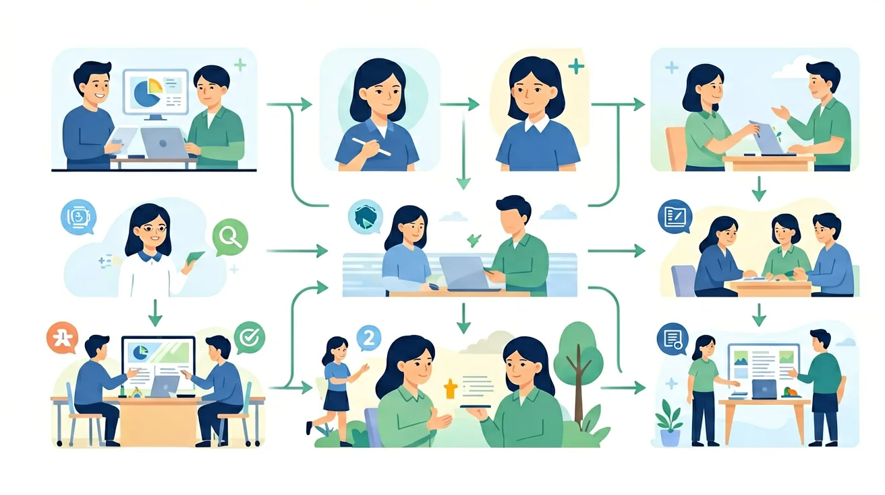

把握8种句式变换，让你的写作更灵活、更有力！
❓ 为什么要把句子变来变去？直接写不行吗？
❓ 老师说的‘把字句’和‘被字句’到底有什么区别？
❓ 考试时怎么快速判断该用哪种句式？
学完这一课，这些问题你都能自信地回答。
🎯 能说出5种基本句式转换类型
🎯 能判断给定句子最适合的转换方式
🎯 能分析不同句式在语境中的表达效果
陈述/疑问/感叹/祈使 + 把字句/被字句/肯定/否定
根据语境需要，在各种句式之间自由切换
知道不同句式在语气、强调、情感上的区别
你已经会写句子了（And），但总是用同一种句式（But），所以学转换让表达更丰富（Therefore）！
选择一种转换类型，看看句子如何变身！
⭐ 这两种句式最常考，掌握核心结构是关键！
🤲 把字句
主语 + 把 + 宾语 + 谓语
强调：主语主动处置宾语
例：猫把鱼吃掉了。
🎯 被字句
宾语 + 被 + 主语 + 谓语
强调：宾语被动受到影响
例：鱼被猫吃掉了。
原句："老师表扬了小明。" → 改为把字句
把字句："小狗把骨头藏起来了。" → 改为被字句
⭐⭐ 陈述句、疑问句、感叹句、反问句的区别与转换
❓ 一般疑问句
真的在问问题，期待回答
例："你做完作业了吗？"
→ 不知道你是否做完，想知道答案
❓！反问句
用问句强调某个肯定/否定意思
例："难道你没做完作业吗？"
→ 其实知道答案，在强调/责问
"难道我们不应该爱护环境吗？"→ 陈述句
原句："这朵花很美丽。"
💡 提示：用"多么……啊！"或"真……啊！"的结构
原句："这道题很难。"
⭐⭐⭐ 双重否定=肯定；综合练习灵活转换
肯定句
他必须去参加。
双重否定（语气更强）
他不得不去参加。
他不能不去参加。
注意：双重否定句意思与肯定句相同，但语气更加肯定、强调。
原句："我们一定要保护环境。"
① 将"同学们都完成了作业"改为反问句：
② 将"风把花瓣吹落了"改为被字句：
一句话，连续变成4种句式！考验你对句式的综合掌握！
原句：
"同学们认真地学习了这篇课文。"
🌍 And（已知）：你已经掌握了一些基础知识
⚡ But（问题）：遇到更复杂的情况还不够用
💡 Therefore（新知）：学习今天的内容，让能力更完整、更系统
和前测对比一下，看看你进步了多少！ 🚀
1. 学完本节课，你对这个语文知识点的掌握程度是？
2. 你能用今天学的知识写一个句子或段落吗？
💡 常见错误往往就在细节中，仔细检查每一步！
和 AI 对话，深化对本节课知识点的理解
💬 参考提示词（复制给 AI 使用）：
✨ 可以用上面的提示词与 AI 展开深度对话，AI 会根据你的回答给出个性化指导。
回忆：今天学了哪些关键词和规则？试着说出来。
用自己的话解释今天学的核心概念，不看书能说清楚吗？
用今天的知识解决一个实际问题，或写一个新例子。
把今天的知识与已有知识联系起来：有什么共同点？有什么区别？能不能自己创造一道新题？
先独立作答，再点选项查看对错与错因。
下列哪句是原句'运动员们奋力拼搏的精神值得我们学习'的正确祈使句改写？
把原句改写成反问句时，哪个选项最恰当？
下列把字句改写中，哪个存在语病？
将原句改写成被字句：运动员们奋力拼搏的精神____我们____。
答案：被,学习
被字句要突出受事主体
用'难道...吗'改写原句：____运动员们奋力拼搏的精神____值得我们学习____？
答案：难道,不,吗
反问句式需要否定词
关于句式转换，下列说法正确的是
观察校园里3处不同位置的通知栏（教务处、食堂、体育馆），记录各自最常用的句式类型
像拆积木一样分离句子成分
句式转换是给句子换‘衣服’不换‘身体’
对比原句和新句的情感强弱变化
观察课文中的句式变换案例
把陈述句变成疑问句邀请同学回答
✅ 保留动作接受者（如：苹果被[我]吃了）
💡 混淆被动句与无主句
✅ 双重否定要保留（如：难道不→确实不）
💡 忽视反问句的隐性否定
口诀：主谓宾，定状补，变换句式看清楚
类比：就像把玩具车拆开重装成不同造型
‘小树被风吹倒了’改成‘把字句’正确的是？
下列哪句不是陈述句？
And：学生已掌握简单句的构成
But：分不清陈述句与疑问句的本质区别
Therefore：建立句式转换的基础概念
句子就像积木，通过变换顺序能表达不同意思。比如陈述句'小明吃了3个苹果'，转换成疑问句就是'小明吃了几个苹果？'。注意：转换时要增减疑问词（如'吗''呢'），数字'3'变成'几'，句号变问号。就像把积木重新排列组合，但不能少零件！
🌍 妈妈问'你写完作业了吗？'就是把'你写完作业了'加上'吗'变成疑问句。下次可以用'我写完数学和语文2科作业了'来回答~
把'公园里有5只鸽子'变成疑问句
And：学生能造简单疑问句
But：不理解反问句强调语气的秘密
Therefore：掌握语气强化的表达技巧
反问句是带着答案问问题，像个小魔术师。比如'难道今天不是星期二吗？'其实在说'今天就是星期二'。秘诀：1.加'难道'/'怎么'等词 2.句尾用'吗/呢' 3.意思要和原句相反。看例子：原句'这个西瓜重8斤'，反问句'这个西瓜难道不重8斤吗？'，语气更强烈了！
🌍 爸爸说'你这次数学不是考了95分吗？'其实在夸你考得好。试着用'这次语文我只扣了2分'造个反问句~
哪个是'全班都到齐了'的反问句？
And：学生知道主动宾结构
But：不会用'把'字重组句子
Therefore：学会突出动作对象
'把'字句像给句子穿新衣服，重点是让动作的承受者当主角。三步走：1.找出动作对象 2.加'把'放句首 3.调整语序。看例子：原句'妈妈洗干净了3件校服'，变身'妈妈把3件校服洗干净了'。注意：'把'后面一定要接具体东西（如3件校服），不能是'妈妈把洗干净了'！
🌍 老师说'请把第25页的2道题做完'，比'请做完第25页的2道题'更突出作业内容。试着用'我整理好了5本故事书'造'把'字句~
正确转换'弟弟踢飞了我的1个足球'
And：学生会转述简单对话
But：人称和标点总是出错
Therefore：掌握转述的精确规则
转述就像当小记者，要调整三要素：1.改人称（'我'变'他'）2.改标点（冒号变逗号）3.改指向词（'明天'变'第二天'）。例子：直述句'小红说："我昨天借了2本书"'，转述为'小红说，她前一天借了2本书'。注意：数字'2'不用改，但时间词要跟着变！
🌍 如果同桌说'我带了3支彩笔'，你向老师报告时说'他说他带了3支彩笔'。试试转述'我们组收集了10个瓶盖'~
正确转述'明明喊："我们赢了比赛！"'
